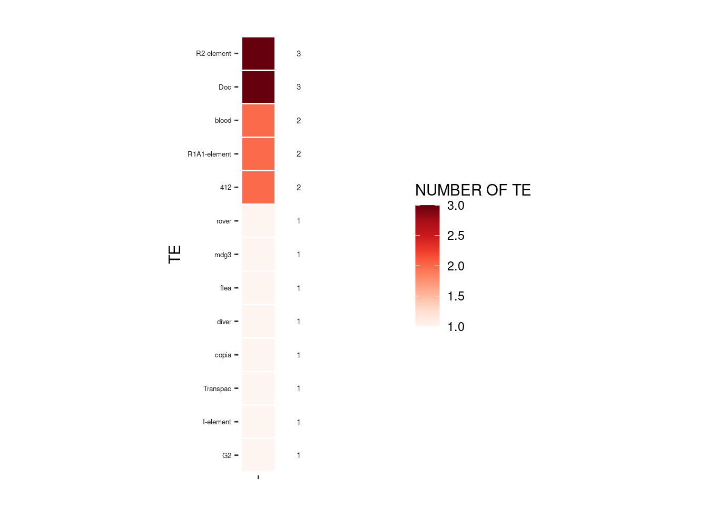

MINI REPORT
2021-08-26
1 REPORT TrEMOLO ANALYSIS
1.1 Resume parameters
## [1] "REFERENCE : work/INPUT/dm6_32.fasta"## [1] "GENOME : work/INPUT/genome_droso_test.fasta"## [1] "TE DATABASE : work/INPUT/canonical_TE.fa"## [1] "SAMPLE : work/INPUT/G73TE_LTR_REDUCEv2.fastq"## [1] "WORKING DIRECTORY : work"## [1] "VARIANT CALLING : svim"INFO : All static graphs are limited to a maximum of 50 values for visibility, dynamic graphs are not limited in number of values.
1.2 INSIDER
INSIDER are TE assembled on genome
1.2.1 NUMBER OF TE
1.2.1.1 INSERTION
Total number of TE : 421
Number of family found : 51

hover your mouse over the bars or navigate with the slider if the number of different TE families is greater than 20
1.2.1.2 DELETION
Total number of TE : 435
Number of family found : 50

hover your mouse over the bars or navigate with the slider if the number of different TE families is greater than 20
1.2.2 FREQUENCE
Hover your mouse over the bars or navigate with the slider if the number of different TE families is greater than 20
1.2.3 TSD
TSD [OK] : these are the TE with TSD 101/421
TSD [KO] : these are the TE without TSD 320/421
Hover your mouse over the bars or navigate with the slider if the number of different TE families is greater than 20
1.2.4 TE POSITION
Select TE family
1.3 OUTSIDER
OUTSIDER are TE no assembled on genome
1.3.1 SV ANALYSIS
Informations of SV.vcf file.
1.3.2 NUMBER OF TE
Total number of TE : 121
Number of family found : 26

1.3.3 FREQUENCE
Hover your mouse over the bars or navigate with the slider if the number of different TE families is greater than 20
1.3.4 TSD
TSD [OK] : these are the TE with TSD 77/120
TSD [KO] : these are the TE without TSD 43/120
Hover your mouse over the bars or navigate with the slider if the number of different TE families is greater than 20
1.3.5 TE POSITION
Select TE family
1.4 ALL
1.4.1 NUMBER OF TE
Total number of TE : 541
Number of family found : 54
1.4.2 FREQUENCE
1.4.3 TE POSITION
Select TE family